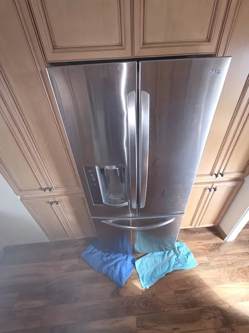

LG Refrigerator Repair: Why Your Freezer Works but the Refrigerator Is Warm
One of the most confusing refrigerator problems homeowners encounter is when the freezer appears to be working normally while the refrigerator compartment becomes warm. Frozen food remains solid, ice production may continue, and the freezer temperature seems acceptable, yet fresh food inside the refrigerator begins spoiling. While this situation can be frustrating, it is actually one of the most common reasons homeowners seek professional LG refrigerator repair.
Many people assume that if the freezer is still cold, the refrigerator’s cooling system must be functioning correctly. In reality, modern refrigerators use a shared cooling system where most of the cold air is generated inside the freezer compartment and then distributed throughout the appliance. If something interferes with the movement of that cold air, the freezer may continue operating while the refrigerator compartment gradually warms up.
One of the most common causes of this problem is a failed evaporator fan motor. The evaporator fan is responsible for moving cold air from the freezer into the refrigerator section. If the fan stops operating or begins running inefficiently, the freezer may remain cold while very little cold air reaches the fresh food compartment. Homeowners often notice warmer refrigerator temperatures long before they realize the fan has stopped functioning properly.

Airflow restrictions can create similar symptoms. Many refrigerators use vents and air channels to distribute cold air throughout the appliance. If these passages become blocked by food items, ice buildup, or frost accumulation, airflow may be reduced significantly. As a result, the refrigerator compartment struggles to maintain proper temperatures even though the freezer continues operating normally.
Defrost system failures are another frequent cause of uneven cooling. Modern refrigerators automatically remove frost from cooling components during normal operation. If the defrost system stops functioning correctly, excessive frost may accumulate around the evaporator coils. This frost restricts airflow and prevents cold air from reaching the refrigerator section. In many cases, homeowners initially believe the refrigerator has stopped cooling when the real issue involves restricted airflow caused by frost buildup.
Temperature sensors can also contribute to this problem. Modern LG refrigerators rely on multiple sensors to monitor operating conditions and communicate with electronic control systems. A faulty sensor may provide inaccurate information that causes improper cooling cycles or airflow management. Professional LG refrigerator repair often includes testing sensors to verify accurate readings and proper system communication.
Damaged air dampers are another possible cause. Air dampers regulate the amount of cold air that flows from the freezer into the refrigerator compartment. If a damper becomes stuck, damaged, or fails electronically, cold air distribution may be interrupted.
Even though the freezer continues producing cold temperatures, the refrigerator section may not receive enough airflow to maintain safe food storage conditions.Electronic control board problems can also affect cooling distribution. Modern refrigerators use sophisticated control systems to coordinate fan operation, temperature regulation, compressor performance, and airflow management. A malfunctioning control board may cause symptoms that appear to be airflow related when the actual problem originates within the electronic control system.
Dirty condenser coils can sometimes contribute to cooling imbalance as well. Condenser coils help remove heat from the refrigeration system. When coils become covered with dust, pet hair, or debris, overall cooling efficiency may decline. Although this typically affects the entire appliance, the refrigerator compartment often shows symptoms first because it operates at a higher temperature than the freezer.
Homeowners may also notice warning signs before the refrigerator becomes completely warm. Food may spoil faster than normal, beverages may not feel as cold, vegetables may lose freshness, or temperatures may fluctuate throughout the refrigerator compartment. These early symptoms often indicate developing airflow or cooling system problems that should be addressed before complete temperature loss occurs.
One common mistake is adjusting temperature settings repeatedly in an attempt to solve the problem. While changing settings may provide temporary improvements in some cases, it rarely addresses the root cause. Issues involving fans, sensors, airflow restrictions, defrost systems, or electronic controls require proper diagnostics to resolve effectively.
Professional LG refrigerator repair focuses on identifying the exact reason cold air is no longer reaching the refrigerator compartment. Technicians inspect airflow systems, evaporator fans, sensors, control boards, dampers, and cooling components to determine the source of the problem. Accurate diagnostics help prevent unnecessary part replacements and improve long term appliance reliability.
If your freezer remains cold while the refrigerator compartment becomes warm, early diagnosis is important. Continuing to operate the appliance without addressing the underlying issue can increase food spoilage and place additional stress on refrigerator components. Understanding the most common causes of uneven cooling helps homeowners recognize warning signs early and restore proper refrigerator performance before the problem becomes more severe.